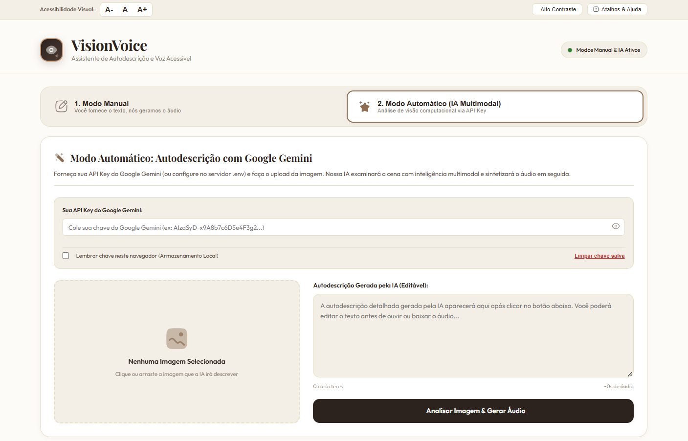
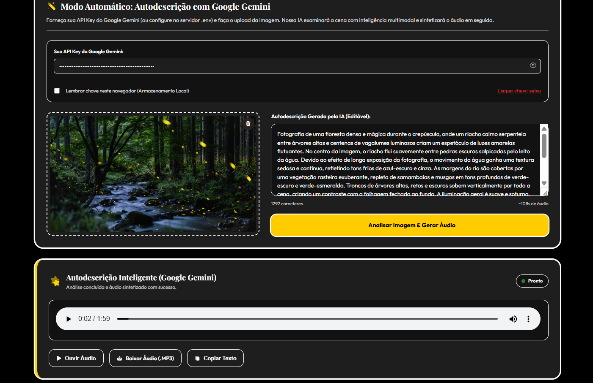

01. Contexto & Motivação da Acessibilidade
A web moderna é predominantemente visual. Para milhões de pessoas cegas ou com baixa visão, a ausência de autodescrições adequadas em imagens representa uma barreira contínua de exclusão digital e perda de contexto informacional.
O VisionVoice nasceu como um projeto de engenharia de software focado em resolver esse desafio de ponta a ponta: transformar imagens arbitrárias em narrativas sonoras ricas, precisas e acessíveis, combinando visão computacional de última geração ao processamento de áudio sintetizado em tempo real.
02. Arquitetura do Sistema
A arquitetura foi projetada para ser leve, assíncrona e desacoplada, dividida em três camadas bem definidas com comunicação puramente via REST:
- Frontend SPA Acessível (Client Tier): Desenvolvido em Pure Vanilla Web Standards (HTML5 semântico com ARIA Landmark Roles, CSS3 com variáveis de alto contraste e JavaScript ES6+), sem dependência de frameworks pesados e com carregamento instantâneo.
- Backend FastAPI & gTTS Engine (Core Engine): Servidor ASGI em Python para ingestão assíncrona de uploads multipart, roteamento de prompts, higienização regex de textos gerados e geração de áudio em memória sem escrita em disco.
- Camada Multimodal (AI Cloud): Integração direta com a API REST do Google Gemini, executando análise visual estruturada e descoberta dinâmica de modelos em baixa latência (1 a 3 segundos).
03. Engenharia de Prompt Acessível & Higienização Textual
A qualidade de uma autodescrição para sintetizador de voz depende criticamente de como a IA é instruída e de
como a saída é tratada antes da conversão fonética. O VisionVoice implementa um prompt em 3
camadas, garantindo que o modelo nunca produza pensamentos intermediários
(<think>)
ou estruturas de lista técnica que prejudiquem a audição:
> ACCESSIBILITY_VISION_PROMPT = """ 1. Visão Geral (o que é a imagem e o tema central). 2. Detalhes Espaciais, Cores e Iluminação (elementos principais da cena). 3. Textos visíveis (se houver, transcritos entre aspas). NÃO inclua <think>, NÃO use markdown (#, **, `) ou seções em inglês.""" > clean_generated_text(raw_output) ---------------------------------------------------------------------- Entrada Raw IA : "<think>Analyzing street scene...</think> **Visão Geral:** Fotografia urbana de uma faixa de pedestres movimentada em dia ensolarado..." Saída Higienizada: "Fotografia urbana de uma faixa de pedestres movimentada em dia ensolarado. No centro, pessoas caminham sob iluminação natural quente. Ao fundo, uma placa sinaliza 'Avenida Central'." ---------------------------------------------------------------------- Status: Texto corrido 100% natural pronto para sintetização vocal em 1.2ms.
Esse pipeline elimina qualquer ruído de formatação e converte o resultado em parágrafos contínuos que soam confortáveis e humanos quando lidos pelo sintetizador de voz.
04. Síntese Vocal In-Memory com gTTS & Streaming
Para evitar gargalos de I/O em disco e garantir que os dados do usuário permaneçam confidenciais e
efêmeros, a conversão fonética em MP3 é executada inteiramente na memória RAM utilizando
io.BytesIO:
- Zero Persistência em Disco: O arquivo de áudio nunca é gravado no sistema de arquivos local, eliminando acúmulo de cache temporário.
- Streaming Assíncrono: No endpoint
POST /api/generate-audio, a resposta é enviada viaStreamingResponse(media_type="audio/mpeg")para reprodução imediata. - Entrega Base64 Data URI: No endpoint multimodal
POST /api/analyze-and-speak, o áudio é encodado em Base64, permitindo que a SPA reproduza o som instantaneamente e disponibilize botão de download sem requisições adicionais.
05. Demonstração Visual & Recursos de Acessibilidade
Abaixo, a comparação entre a interface no Modo Padrão (Claro) e no Modo Alto Contraste (Escuro com contornos dourados), demonstrando a versatilidade visual para diferentes necessidades e perfis de visão:


Atalhos Globais de Teclado (Navegação Rápida)
Para empoderar usuários que utilizam exclusivamente o teclado ou leitores de tela, o VisionVoice conta com atalhos globais mapeados em toda a aplicação:
| Atalho | Função / Ação | Público Beneficiado |
|---|---|---|
| Alt + 1 | Alternar para o Modo Manual (Digitação de texto + gTTS) | Todos os usuários |
| Alt + 2 | Alternar para o Modo Automático (IA Multimodal Gemini) | Todos os usuários |
| Alt + C | Ativar / Desativar Modo Alto Contraste | Baixa visão & fotofobia |
| Alt + P | Tocar / Pausar o áudio sintetizado gerado | Leitores de tela & audição rápida |
| Alt + + / - / 0 | Ajuste de Fonte (Aumentar, Diminuir ou Redefinir) | Baixa visão & legibilidade |
| Alt + H | Abrir Guia de Acessibilidade e Ajuda na tela | Novos usuários & navegação guiada |
06. Homologação da API & Métricas de Desempenho
O back-end foi homologado para garantir tempo de resposta ultrarrápido, tratamento seguro de exceções e validação estrita de entradas multipart e JSON:
> curl -I http://127.0.0.1:8000/api/health HTTP/1.1 200 OK {"status": "online", "message": "VisionVoice API funcionando com sucesso."} > test_analyze_and_speak(image="test_sample.jpg", model="gemini-2.0-flash") ---------------------------------------------------------------------- 1. Upload & Validação MIME (image/jpeg) : VÁLIDO [ 12ms ] 2. Descoberta de Modelos (/v1beta/models) : OK (gemini-2.0-flash) 3. Injeção de Prompt & Análise Multimodal : OK (1.42s) 4. Filtro Regex de Higienização Textual : OK (1.1ms) 5. Síntese Vocal gTTS na Memória (BytesIO) : OK (380ms) 6. Retorno Base64 + Streaming MP3 : 200 OK (Tamanho: 48.2 KB) ---------------------------------------------------------------------- Resultado: Pipeline completo executado em ~1.81s com Zero I/O em disco.
Explore o Projeto no GitHub
Acesse o código-fonte completo, a documentação Swagger e o design system acessível do VisionVoice.